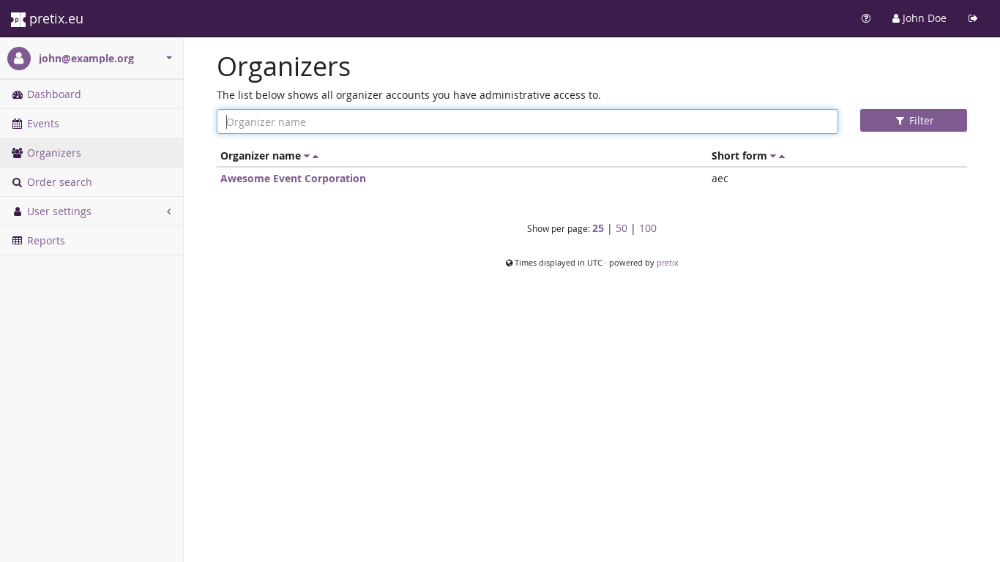
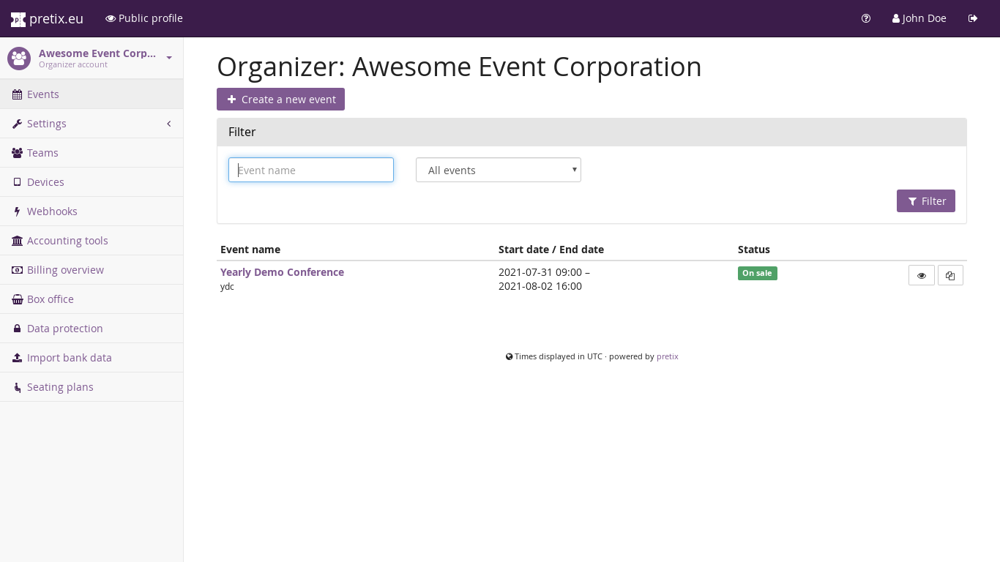
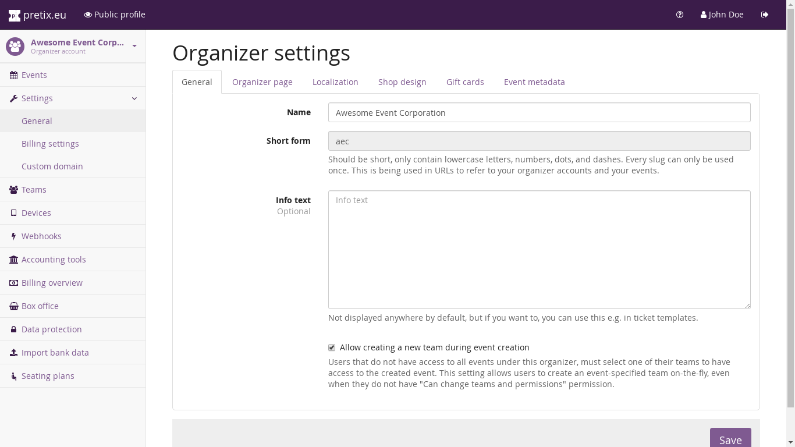

Organizer account¶
The basis of all your operations within eventyay is your organizer account. It represents an entity that is running events, for example a company, yourself or any other institution. Every event belongs to one organizer account and events within the same organizer account are assumed to belong together in some sense, whereas events in different organizer accounts are completely isolated.
If you want to use the hosted eventyay service, you can create an organizer account on our Get started page. Otherwise, ask your eventyay administrator for access to an organizer account.
You can find out all organizer accounts you have access to by going to your global dashboard (click on the eventyay logo in the top-left corner) and then select “Organizers” from the navigation bar on the left side. Then, choose one of the organizer accounts presented, if there are multiple of them:
{kind=link}
This overview shows you all event that belong to the organizer and you have access to:
{kind=link}
With the “Edit” button at the top, next to the organizer account name, you can modify properties of the organizer account such as its name and display settings for the public profile page of the organizer account:
{kind=link}
Tip
The profile page will be shown as https://eventyay.com/slug/ where slug is to be replaced by the short form of
the organizer name that you entered during account creation and eventyay.com is to be replaced by your
installation’s domain name if you are not using our hosted service.
Instead, you can also use a custom domain for the profile page and your events, for example
https://tickets.example.com/ if example.com is a domain that you own. Head to Using a custom domain to learn
more.